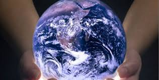

Dia Internacional de la madre Tierra
- 


Realizado por:
ARACELI FLORES TORRES
4° "H"
Especialidad:
Programacion
Submodulo:
Desarrolla Aplicaciones Moviles
Docente:
Lic.jose Amtonio Gomez Hernandez
4° "H"
Programacion
Desarrolla Aplicaciones Moviles
Lic.jose Amtonio Gomez Hernandez
Celebramos el Dia Internacional de la Madre Tiera para recordar que el planeta y sus ecosistemas nos dan la vida y el sustento.Con este dia,asumimos.ademas de la responsabilidad colectiva, como nos recordaba la Declaracion de Rio de 1992, de dormentar esta armonia con la naturaleza y la Madre Tierra Este dia nos brinda tambien la opoortunidad de concienciar a todos loa habitantes del planeta acerca de los problemas que afectan a la Tierra y a las diferentes formas de vida que en el se desarrollan

Casi 20 años después, esta efeméride alcanzó dimensiones mundiales cunado la Organización de las Naciones Unidas (ONU), en el marco de una reunión sostenida en Rio de Janeiro en 1992, instituyó con beneplácito de las más de 100 naciones participantes, el 22 de abril como Día Internacional de la Madre Tierra. El origen de esta celebración comenzó en 1970, cuando 20 millones de norteamericanos comenzaron a manifestarse por un medio ambiente sano y sustentable.

La Tierra y sus ecosistemas son nuestro hogar. Para alcanzar un justo equilibrio entre las necesidades económicas, sociales y ambientales de las generaciones presentes y futuras, es necesario promover la armonía con la naturaleza y el planeta. En todo este tiempo, el planeta ha sido capaz de regenerarse y tomar la distribución de los continentes hasta como ahora los conocemos. Todo ese recorrido en el tiempo, ha superado una serie de cambios que impactaron en la fauna y flora.
Desde 2009, el objetivo de la Asamblea General, al adoptar sus nueve resoluciones sobre Armonía con la Naturaleza, ha sido definir esta nueva relación basada en una relación no antropocéntrica con la Naturaleza. La armonía con la naturaleza es un sentimiento que los humanos experimentamos cuando estamos en equilibrio con la misma.

El secretario general de la ONU lanza un mensaje para que todas las personas del mundo hablen en nombre del planeta. El objetivo de este año serán las ciudades verdes. Más de 1000 millones de personas de 190 países diferentes participaran hoy en distintas actividades para salvaguardar el medio ambiente.